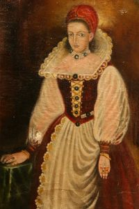

Hrad Čičva bol vo vlastníctve rodu Rozgonyiovcov vyše tri storočia. Za zakladateľa tohto rodu sa považuje Reynold (1259 – 1296), župan Sabolčskej stolice, správca kráľovských koniarní a veliteľ strážnych oddielov. Počas svojho života sprevádzal kráľa Štefana V. na vojenských výpravách v zahraničí. Zúčastnil sa aj bojového stretnutia pri Ilzegu, počas ktorého zajal kopiou raneného bána Henrika, hoci sám v bitke utŕžil vážne zranenie ľavého oka. Ako sme už spomínali, kráľ Štefan V. v roku 1270 Reynolda za jeho verné služby odmenil viacerými majetkami, vrátane panstva Čičva. Rozgonyiovci sídlili na hrade Čičva do prvej polovice 14. storočia, dokonca sa názov hradu ojedinele vyskytoval aj v ich predikáte. Podľa zachovaných písomných dokumentov bol hradný palác v roku 1363 značne schátraný a sotva obývateľný. V tomto období si dali Rozgonyiovci postaviť nížinný vodný hrad v mestečku Vranov, ktorý im pravdepodobne poskytoval pohodlnejšie bývanie. Čičvu v priebehu ďalších storočí spravovali kasteláni a Rozgonyiovci sa na nej zdržiavali už iba príležitostne. Hrad plnil najmä vojensko-strážnu funkciu. Posledný majiteľ hradu z tohto rodu Štefan Rozgonyi po sebe nezanechal mužského potomka. Jeho dcéra Katarína sa stala manželkou Andreja Báthoryho a v roku 1519 došlo medzi týmito rodmi k uzavretiu dedičskej zmluvy. Smrťou Štefana v roku 1523 vymrel rod Rozgonyiovcov po meči a v nasledujúcom roku sa hrad Čičva stal majetkom Báthoryovcov.
Najznámejšou postavou z tohto rodu je Alžbeta Báthoryová, ktorú v roku 1573 vo Vranove zasnúbili s Františkom Nádasdym. Azda kvôli venu bol v predchádzajúcom roku na hrade Čičva vyhotovený súpis Alžbetiných cenností a šperkov. Dňa 8. mája 1575 sa v mestečku Vranov konala ich svadba. Pozvali na ňu cisára Maximiliána, ale ten sa ospravedlnil a po svojom zástupcovi poslal novomanželom ako svadobný dar pozlátený krčah v hodnote 200 zlatých. Od cisárovnej dostali čašu za 100 a od arcivojvodov Rudolfa a Ernesta času za 150 zlatých. Svadby sa zúčastnilo 4500 hostí, ďalšie podrobnosti týkajúce sa tejto udalosti nepoznáme. Alžbeta si do manželstva s Františkom Nádašdym priniesla ako veno aj hrad Čičva, na ktorom sa zdržiavala iba príležitostne. Hrad Čičva sa stal venom aj ich dcéry Kataríny Nádasdyovej, ktorá sa 6. januára 1610 vydala v Čachticiach za Juraja Drugetha z Humenného. Drugethovci pravdepodobne vlastnili časť majetkov panstva Čičva už od sobáša Štefana Báthoryho, Alžbetinho brata, s Eufrozínou Drugethovou. Ich manželstvo však zostalo bezdetné.
V roku 1683 Imrich Thököly pritiahol s veľkou armádou do severovýchodného Uhorska. Na župnom zhromaždení, ktoré sa v tom čase uskutočnilo na hrade Čičva, vraj Zemplínska stolica vyplatila Thökölymu vojenské trovy vo výške 4000 dukátov. V priebehu roku 1684 Imrich Thököly s pomocou tureckého vojska postupne obsadil všetky hrady Žigmunda Drugetha, ktoré boli vybavené poľskými posádkami, vrátane hradu Čičva. Podarilo sa mu zajať samotného Žigmunda, ktorého nechal uväzniť v Košiciach. V tom čase, pravdepodobne pričinením kurucov, hrad Čičva vyhorel. Väčšina historikov uvádza, že Imrich Thököly nechal Žigmund Drugetha v Košiciach popraviť. Podľa zápisu v denníku grófky Terézie Keglevichovej, Žigmundovej manželky, sa mu z väzenia podarilo ujsť a zomrel až po ťažkej chorobe 19. apríla 1684 v Užhorode. Žigmundom vymrel rod Drugethovcov po meči. Cisár Leopold I. na základe darovacej listiny z 30. júna 1702 ponechal všetky majetky Drugethovcov, aj tie, ktoré mohli dediť iba mužskí potomkovia, Žigmundovým dcéram Juliane-Terézii Althan a Kláre Zichy a jeho sestre Kristíne, vdove po Ondrejovi Forgáchovi.
Po Drugethovcoch sa v priamej súvislosti s hradom Čičva spomína už iba František Barkóczy, ktorý sa v roku 1703 pridal k povstaniu Františka II. Rákóczyho. V roku 1704 kuruci obsadili hrad Čičvu, vylepšili jeho opevnenie a udržali si ho až do konca povstania. Potravu si zaobstarávali v širokom okolí. Celých sedem rokov rabovania a iných násilností vojakov zapríčinili to, že mnohé usadlosti spustli, niektoré dokonca zanikli. Počas postupného porážania kurucov gróf František Barkóczy v januári 1711 vydal hrad Čičvu bez boja cisárskemu generálovi Jánovi Pálffymu. Neskôr bol preto obvinený zo spojenectva s labancami. Cisársky generál Lanken rozkázal hrad zbúrať a odvtedy leží v ruinách.